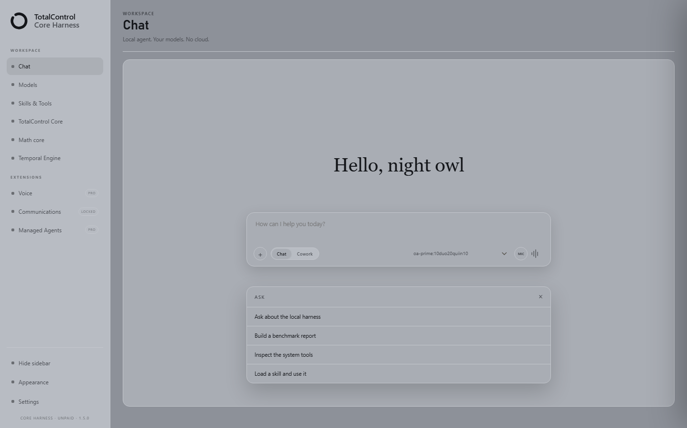
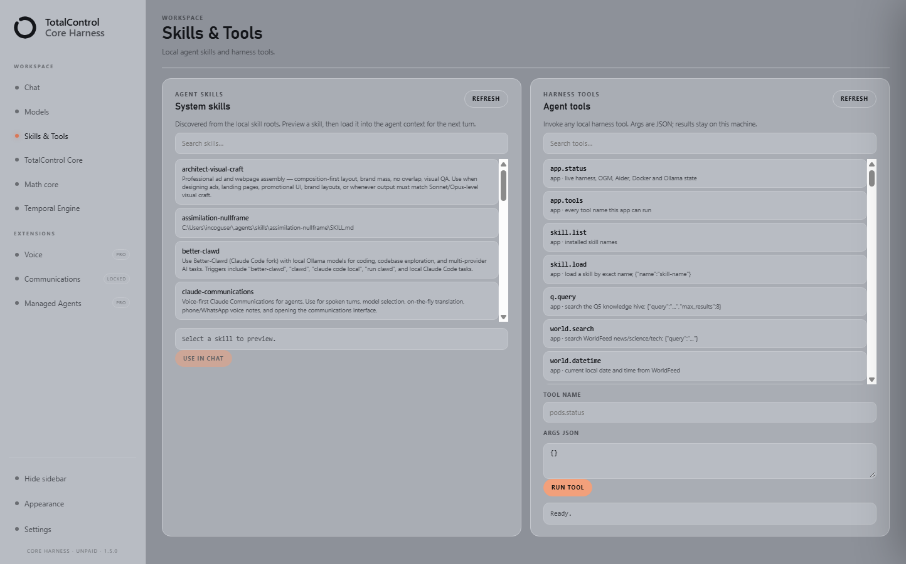
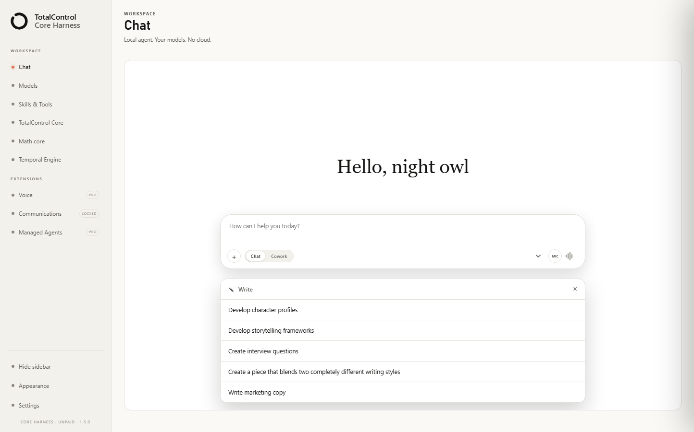
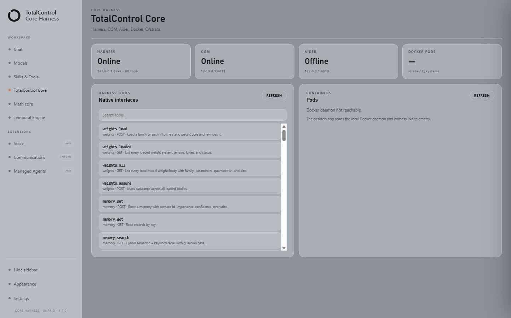

Choose the TotalControl browser extension set for Chrome, Edge, and Firefox. Get browser assistance and visual information tools wherever you prefer to work.


This is the Cordis side panel — the crawlers and the memory system for placing your data. Run one or two crawlers, and use the memory system and the extension at the same time — feeding from both sources at once. The settings panel opens on the right; the Cordis button at the top of this panel opens the Cordis panel with just a click — complete control.
Use TotalControl with your Firefox browser.
Use TotalControl with your Edge browser.
Use TotalControl with your Chrome browser.


Orca skill support and the Cordis plugin are native — change the wallpaper, flip light and dark mode, tune the blur and the frost glass: you can truly customise this harness. The Cordis side panel is the crawlers and the memory system for placing your data — run one or two crawlers, use the memory system and the extension at the same time, feeding from both sources at once, and hold complete control on the Cordis button, one click at the top of the panel. This harness was designed as a thin client — a much better flow between your AI and your systems.
Work with the web pages you choose as part of your AI workflow.
Explore information in a visual workspace and return to useful details later.
Bring helpful saved information into your work when you need it.
Firefox + Chrome + Edge — browser assistance and visual information tools across your preferred browsers.
BUY THE TRIO — PAYPAL · $29.99